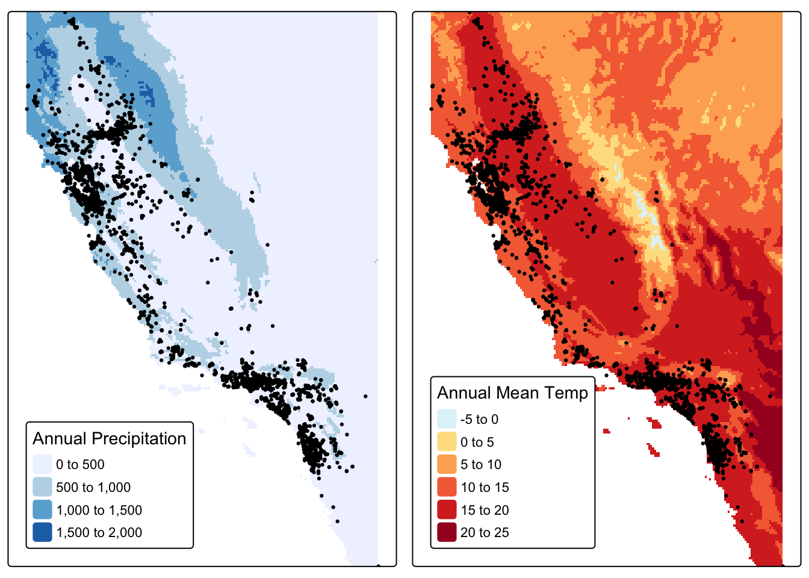

library(tidyverse)
library(sf)
library(terra)
library(dismo)
library(tmap)
library(patchwork)magpie <- read_csv(here::here("data", "magpie_obvs.csv"))
tule_elk <- read_csv(here::here("data", "tule_elk_obvs.csv"))
bioclim_dir <- here::here("data", "climate", "wc2.1_2.5m")
bioclim <- list.files(bioclim_dir, pattern = glob2rx("*.tif$"), full.names = TRUE)
bioclim_rast <- rast(bioclim)Name Raster Layers
variables <- c("annualMeanTemp", "meanDiurnalRange", "isothermality", "tempSeasonality", "maxTempWarmMonth", "maxTempColdMonth", "tempAnnualRange", "meanTempWetQ", "meanTempDryQ", "meanTempWarmQ", "meanTempColdQ", "annualPrecip", "precipWetMonth", "precipDryMonth", "precipSeasonality", "precipWetQ", "precipDryQ", "precipWarmQ", "precipColdQ")
names(bioclim_rast) <- variablesFind Geographic Extent of Species Occurences
magpie_sf <- magpie %>%
rename(long = longitude,
lat = latitude) %>%
drop_na(long) %>%
st_as_sf(coords = c("long", "lat"), crs = 4326)# Obtain geographic extent/bounding box of the species occurrences
magpie_bbox <- st_bbox(magpie_sf)Crop Raster and Extract Points for Species Occurences
# Crop raster to match the geographic extent of the species occurrences
bioclim_crop <- crop(bioclim_rast, magpie_bbox)# Extract points from raster for all species occurrences
bioClim_pts <- as_tibble(extract(bioclim_crop, magpie_sf))Crop Raster and Extract Random Points
set.seed(42) # for reproducibility
# Generate random sample points from raster
random_pts <- dismo::randomPoints(mask = raster(bioclim_crop[["annualMeanTemp"]]),
n = nrow(magpie) * 2,
ext = magpie_bbox)# Extract points from raster for random sample points
bioClim_random_pts <- as_tibble(extract(bioclim_crop, random_pts))View Map
map_1 <- tm_shape(raster(bioclim_crop[["annualPrecip"]])) +
tm_raster(palette = "Blues", title = "Annual Precipitation") +
tm_shape(magpie_sf) +
tm_dots(col = "#3a5a40", size = 0.15) +
tm_layout(legend.position = c("left", "bottom"),
legend.bg.color = "white")
map_2 <- tm_shape(raster(bioclim_crop[["annualMeanTemp"]])) +
tm_raster(palette = "-RdYlBu", title = "Annual Mean Temp") +
tm_shape(magpie_sf) +
tm_dots(col = "#3a5a40", size = 0.15) +
tm_layout(legend.position = c("left", "bottom"),
legend.bg.color = "white")
tmap_arrange(map_1, map_2)
View Plot
plot_1 <- ggplot(data = bioClim_pts, aes(x = annualPrecip, y = annualMeanTemp)) +
geom_point(shape = 16, color = "#3a5a40") +
labs(x = "Annual Precipitation",
y = "Annual Mean Temperature",
title = "Species Climate Niche") +
theme_bw()
plot_2 <- ggplot(data = bioClim_random_pts, aes(x = annualPrecip, y = annualMeanTemp)) +
geom_point(shape = 16) +
labs(x = "Annual Precipitation",
y = element_blank(),
title = "Background Climate") +
theme_bw()
plot_1 + plot_2Create Generalizable Workflow
climate_envelope <- function(clim_rast, clim_var1, clim_var2, occurences, species_name){
species_name <- species_name %>%
str_to_lower() %>%
str_replace_all(" ", "_")
occurences_sf <- occurences %>%
rename(long = longitude,
lat = latitude) %>%
drop_na(long) %>%
st_as_sf(coords = c("long", "lat"), crs = 4326)
occurences_bbox <- st_bbox(occurences_sf)
clim_crop <- crop(clim_rast, occurences_bbox)
clim_pts <- as_tibble(extract(clim_crop, occurences_sf))
random_pts <- randomPoints(mask = raster(clim_rast[[clim_var1]]),
n = nrow(occurences) * 2,
ext = occurences_bbox)
clim_random_pts <- as_tibble(extract(clim_crop, random_pts))
map_1 <- tm_shape(raster(clim_crop[[clim_var1]])) +
tm_raster(palette = "Blues") +
tm_shape(occurences_sf) +
tm_dots(col = "#3a5a40", size = 0.15) +
tm_layout(legend.position = c("left", "bottom"),
legend.bg.color = "white")
map_2 <- tm_shape(raster(clim_crop[[clim_var2]])) +
tm_raster(palette = "-RdYlBu") +
tm_shape(occurences_sf) +
tm_dots(col = "#3a5a40", size = 0.15) +
tm_layout(legend.position = c("left", "bottom"),
legend.bg.color = "white")
plot_1 <- ggplot(data = clim_pts, aes_string(x = clim_var1, y = clim_var2)) +
geom_point(shape = 16, color = "#3a5a40") +
labs(title = "Species Climate Niche") +
theme_bw()
plot_2 <- ggplot(data = clim_random_pts, aes_string(x = clim_var1, y = clim_var2)) +
geom_point(shape = 16) +
labs(y = element_blank(),
title = "Background Climate") +
theme_bw()
assign(paste0(species_name, "_map_1"), map_1, envir = .GlobalEnv)
assign(paste0(species_name, "_map_2"), map_2, envir = .GlobalEnv)
assign(paste0(species_name, "_plot_1"), plot_1, envir = .GlobalEnv)
assign(paste0(species_name, "_plot_2"), plot_2, envir = .GlobalEnv)
}climate_envelope(clim_rast = bioclim_rast, clim_var1 = "annualPrecip", clim_var2 = "annualMeanTemp", occurences = tule_elk, species_name = "Tule Elk")
tule_elk_map_1
tule_elk_map_2tule_elk_plot_1tule_elk_plot_2